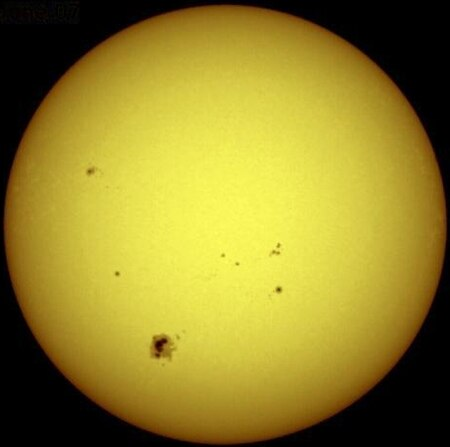
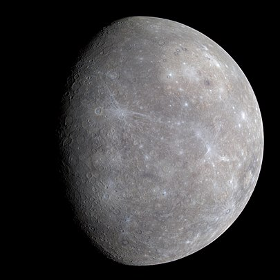
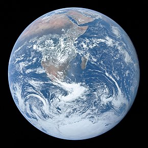

The solar system
The Solar System is the gravitationally bound system of the Sun and the objects that orbit it.[4] The largest of these objects are the eight planets, which in order from the Sun are four terrestrial planets (Mercury, Venus, Earth and Mars); two gas giants (Jupiter and Saturn); and two ice giants (Uranus and Neptune). The Solar System developed 4.6 billion years ago when a dense region of a molecular cloud collapsed, forming the Sun and a protoplanetary disc.

The Sun is the star at the center of the Solar System. It is a massive, hot ball of plasma, inflated and heated by energy produced by nuclear fusion reactions at its core. Part of this energy is emitted from its surface as light, ultraviolet, and infrared radiation, providing most of the energy for life on Earth. The Sun has been an object of veneration in many cultures. It has been a central subject for astronomical research since ancient times.
weiterlesen

Mercury is the first planet from the Sun and the smallest in the Solar System. In English, it is named after the Roman god Mercurius (Mercury), god of commerce and communication, and the messenger of the gods. Mercury is classified as a terrestrial planet, with roughly the same surface gravity as Mars. The surface of Mercury is heavily cratered, as a result of countless impact events that have accumulated over billions of years. Its largest crater, Caloris Planitia, has a diameter of 1,550 km (960 mi) and one-third the diameter of the planet (4,880 km or 3,030 mi). Similarly to the Earth's Moon, Mercury's surface displays an expansive rupes system generated from thrust faults and bright ray systems formed by impact event remnants.
read more

Venus is the second planet from the Sun. It is a terrestrial planet and is the closest in mass and size to its orbital neighbour Earth. Venus is notable for having the densest atmosphere of the terrestrial planets, composed mostly of carbon dioxide with a thick, global sulfuric acid cloud cover. At the surface it has a mean temperature of 737 K (464 °C; 867 °F) and a pressure of 92 times that of Earth's at sea level. These conditions are extreme enough to compress carbon dioxide into a supercritical state close to Venus's surface.
read more

Earth is the third planet from the Sun and the only astronomical object known to harbor life. This is enabled by Earth being a water world, the only one in the Solar System sustaining liquid surface water. Almost all of Earth's water is contained in its global ocean, covering 70.8% of Earth's crust. The remaining 29.2% of Earth's crust is land, most of which is located in the form of continental landmasses within Earth's land hemisphere. Most of Earth's land is somewhat humid and covered by vegetation, while large sheets of ice at Earth's polar deserts retain more water than Earth's groundwater, lakes, rivers and atmospheric water combined. Earth's crust consists of slowly moving tectonic plates, which interact to produce mountain ranges, volcanoes, and earthquakes. Earth has a liquid outer core that generates a magnetosphere capable of deflecting most of the destructive solar winds and cosmic radiation.
read more